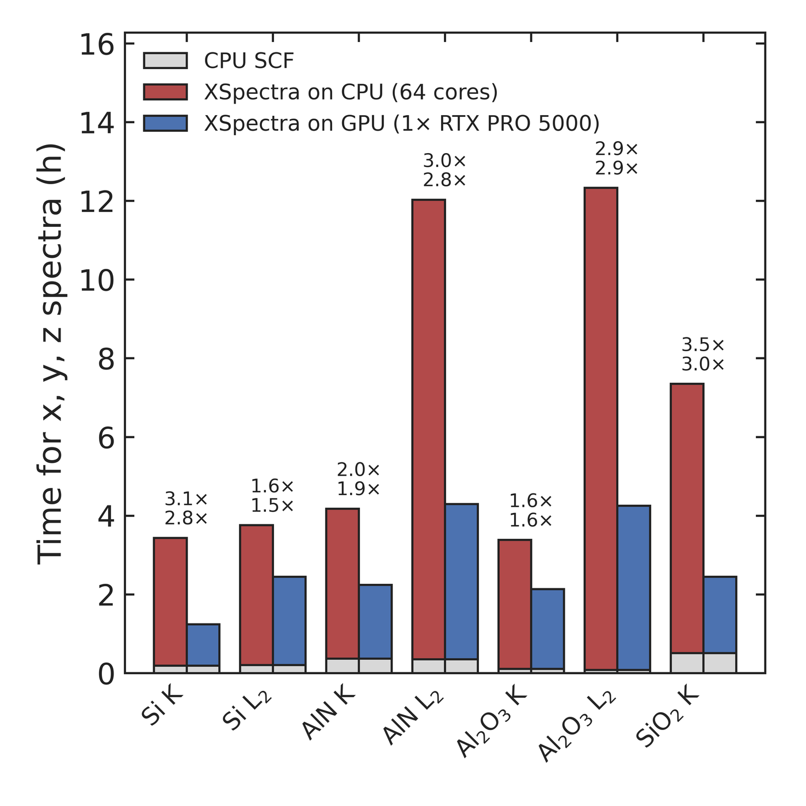

Projects
Open-source software for spectroscopy and atomistic simulation.
Symmetrix with MACE-Field support
This fork of Symmetrix adds GPU support for MACE-Field, an electric-field-aware machine-learning interatomic potential. It enables molecular dynamics under applied electric fields through the Python calculator and the Kokkos pair style in LAMMPS. The LAMMPS interface can also report polarization.
In the repository’s benchmark of 2,560-atom BaTiO₃ on one NVIDIA RTX 5090, FP32 throughput was 21.4 ns/day with Symmetrix and 1.46 ns/day with LAMMPS ML-IAP using the same MACE-Field model. The benchmark used a shared GPU.
XSpectra on the GPU (OpenACC)
xspectra-gpu is an OpenACC port of Quantum ESPRESSO’s XSpectra built on dm_qe. It accelerates first-principles X-ray absorption calculations at the K and L edges with ultrasoft and PAW pseudopotentials.
For the Si K edge of a 162-atom α-SiO₂ supercell, running XSpectra on one RTX PRO 5000 reduced the full workflow from 7.3 to 2.4 hours. The self-consistent field (SCF) step ran on the CPU in both cases.
